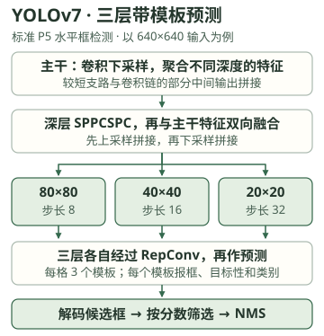

YOLOv7 · 标准 P5 水平框检测
YOLOv7：哪些计算要留到推理？
直接给实时检测器加层，训练和上线通常都要为新层付出算力。YOLOv7 把两类改动分开：有些路径一直保留，让不同深度的特征一起参与判断；有些分支只让训练更充分，上线前可以等价合并，或在特定型号中直接去掉。
以下以作者仓库的标准 cfg/training/yolov7.yaml 为准。P5 指最粗的预测层步长为 32，不是五个尺度都参与预测。论文中的 W6、E6E 在最后单独说明。
01 · 主线①②⑤ 从特征到输出
同一处损伤，为什么会出现好几个候选框？
输入一张 640×640 照片。主干逐步降低分辨率，深层的 SPPCSPC 用不同范围的池化汇集上下文；特征融合部分再把粗层信息送到细层，也把融合后的细层信息送回粗层。最终做预测的是 80×80、40×40、20×20 三张特征图。

每个位置放三种先验框。检测头为每个模板同时报中心与宽高的调整量、目标性和各类别分数。三层一共给出 3 × (80² + 40² + 20²) = 25,200 个候选，不是 25,200 个缺陷。常规多类别推理用目标性乘类别分数，再以 NMS 抑制重叠的同类框。
对照：标准配置 · IDetect 解码 · 筛框与 NMS。
02 · 主线① 特征提取
深层能读懂整块区域，为什么还要接回中间层？
若只拿一串卷积的最后输出，较早得到的边缘证据必须经过后面所有变换才能抵达出口。标准 v7 的主干让较短支路和长支路上选定的中间结果在末端拼接。例如同一块里，一支走 1×1 卷积，另一支继续走多次 3×3 卷积，最后把几种深度的输出交给 1×1 卷积重新混合。这是同一尺度内部的 ELAN 式聚合，和上、下采样连接不同尺度要分开看。
这样做保留了不同长度的信息与梯度路径；与此同时，拼接会改变后续层接收的通道数。论文提出的联合缩放正针对这个问题：加深计算块时，也要考虑过渡层的宽度。多拼几层不等于免费，更不保证一定能找回缩放时已经丢掉的细痕。
ELAN 和论文标题图中的 E-ELAN 是一回事吗？
ELAN 式结构说明多条长短不同的路径怎样汇合。论文的 E-ELAN 在此基础上，用分组卷积扩展特征组，再重排、合并，尽量保留原来的梯度路径。论文第 5.1 节写明，将这个扩展用于 E6 得到 E6E。读标准 P5 配置时，不应给每个多分支节点都画上分组重排。
03 · 主线③④ 样本分配与损失
有了宽高模板，正样本就已经定了吗？
假设一张图只有一处磕碰。模板定义了候选框从哪种形状起步，却没有指定哪个候选负责这处磕碰。作者 train.py 的默认 OTA 路径先按标注宽高与模板的比例及邻近格位置收集候选，再读这一批图像的预测。预测框与标注的 IoU 用来估算该目标可分到几个样本；分类和定位的匹配代价决定具体选谁。如果同一个候选被多个目标争用，再按代价解决冲突。
分配结束才算监督：被选中的候选学习框的位置，并在多类别任务中学习类别；目标性损失还约束背景位置。默认框损失使用 CIoU，目标性与多类别分类用 BCE。于是按模板出框可以和按当前预测动态分配同时成立。切换训练超参数可走另一条匹配路径，不能只凭模型名断定训练配方。
04 · 主线⑥ 训练与推理成本
RepConv 在训练时有多条支路，部署时为什么能只留一个卷积？
标准模型在三个检测尺度的预测层前各放一个 RepConv。以这里的配置为例，同一输入分别经过 3×3 卷积和 1×1 卷积，各自过批归一化，先把两路结果相加，再做一次激活。训练时，两路各有自己的参数。
切到推理模式后，批归一化使用固定统计量，可以折进对应的卷积。把 1×1 核放到一个全零 3×3 核的正中央，再与另一支的核逐元素相加，偏置也相加，就得到作用相同的一个 3×3 卷积。这叫结构重参数化。它能减少部署图上的分支和算子调度；速度收益仍取决于导出方式和硬件。
为什么不能把前面的多分支聚合也全部折叠？
等价合并依赖这里的线性求和关系，并且激活在求和之后。穿过多次非线性激活的卷积链，不满足同样条件；通道拼接也不是逐元素相加。ELAN 式聚合保留在推理图里。另一个常见混淆是把所有 RepConv 都画出恒等分支：作者实现只有输入输出通道相等且步长为 1 时才可带它，标准 P5 检测头前的三处都会改变通道数。
05 · 训练型改进的适用范围
辅助头是另一种省下推理成本的做法。
W6 这样的配置在训练图里增加辅助检测头，让较早的特征也直接收到监督。论文的粗细分配让主头预测和真实标注共同指导两个头：给辅助头更宽的正样本范围，给主头更严格的目标。部署时只用主头。这里是舍去仅供训练的支路；RepConv 是等价合并仍有贡献的支路，两者原理不同。
论文表 6 在 E6、1280 输入下比较辅助监督，COCO 验证 AP 从无辅助时的 55.6 提到粗细引导时的 55.9。这个结果是那组设置下的证据，不是标准 P5 加辅助头的结果：P5 的配置结尾是三尺度 IDetect，W6 训练配置才在末端列出主头与辅助头的两套输入。
论文表 6：辅助头消融 · W6 训练图 · W6 部署图。